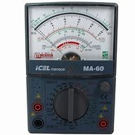

Lei de Ohm
A Lei de Ohm, formulada pelo físico alemão Georg Simon Ohm, estabelece uma relação fundamental entre três grandezas elétricas fundamentais: tensão (V), corrente elétrica (I) e resistência elétrica (R). Essa lei nos permite entender como a corrente elétrica flui através de um circuito e como os componentes eletrônicos interagem entre si.
Por exemplo, em um condutor mantido à temperatura constante, a intensidade da corrente elétrica (I) que o atravessa é diretamente proporcional à tensão elétrica (V) aplicada entre seus terminais e inversamente proporcional à sua resistência elétrica (R), resumidamente, I = V e V/R, como também R = V e V/I, e por fim, V = I*R. Essa função matemática pode ser entendida melhor utilizando a Pirâmide de Ohm, a qual explica de modo simplificado e abstrato as relações que as grandezas têm entre si.
Essa função matemática nos ajuda a calcular e desvendar grandezas de uma corrente elétrica caso seja necessário produzir um circuito elétrico sem que haja a queima de algum componente elétrico antes mesmo que o circuito seja testado. Logo, podemos saber que, se a corrente elétrica tende ser = 2,2 v tendo uma entrada de 5,0 volts, a resistência terá de ser 11 ohm 's, pois 2,2 = 5/x, trazemos o 5 dividindo para multiplicar pelo 2,2 e teremos que x = 11.
O que é um resistor?
Os resistores são componentes eletrônicos que podem ter tamanhos microscópicos até de um grão de ervilha. Este componente serve para criar uma resistência contra a tensão da corrente, calibrando a saída para que não queime outros componentes pela carga excessiva de energia, como o queimar de LED 's caso ultrapasse 3 volts, dependendo da cor. Os resistores podem ter tensões diferentes conforme a lei de Ohm para regular a corrente, e por isso possuem cores de identificação na sua lateral, divididas em 4 faixas geralmente, podendo chegar até 5 caso precise ser mais específico.
As 2 primeiras faixas dão o valor primordial de resistência, então um resistor de 10 ohm 's de resistência terá as 2 primeiras faixas como 1° Marrom e 2° Preto. A terceira faixa seria a multiplicação de 0 's para ser usado números maiores, então um resistor de resistência 1000 terá a 3° faixa como Vermelho, contando o 0 da 2° faixa (que é de cor Preta).
Por último, a 4° faixa representa a tolerância/faixa de erro que um resistor pode ter, pois os resistores não têm exatamente a resistência que propõe. Normalmente essa tolerância é de 5%, representado com a cor Dourada, existindo resistores bem mais baratos, mas quase extintos, que utilizam a cor Prata de 20%. Essas porcentagem significam o nível de tolerância que o resistor pode ter, logo um resistor de 100 ohm 's com tolerância de cor Dourada pode ter entre 95 e 105 ohms.
O que é um Arduino?
O Arduino é uma plataforma de prototipagem eletrônica de código aberto, composta por uma placa de hardware e um ambiente de desenvolvimento integrado (IDE) que permite a programação e a interação com diversos componentes eletrônicos. Desde sua criação, o Arduino se tornou uma ferramenta essencial para entusiastas, educadores e profissionais que desejam explorar o mundo da eletrônica e da programação.
As placas Arduino são equipadas com microcontroladores que podem ser programados para realizar uma variedade de tarefas, desde simples acendimentos de LEDs até complexos sistemas de automação. A linguagem de programação utilizada é baseada em C/C++, o que facilita o aprendizado e a implementação de projetos.
Uma das grandes vantagens do Arduino é a sua versatilidade. Com uma vasta gama de módulos e sensores disponíveis, como sensores de temperatura, umidade, movimento, e muitos outros, os usuários podem criar projetos inovadores e personalizados que atendem às suas necessidades específicas. Além disso, a comunidade global de usuários do Arduino oferece uma rica biblioteca de tutoriais, exemplos de código e suporte, tornando o aprendizado ainda mais acessível.
A placa conta com 14 entradas digitais, variando de 0 até 13, e 6 entradas analógicas, variando de A0 até A6. As entradas digitais do Arduino funcionam de modo booleano ou binário, como 0 e 1 (falso ou verdadeiro), sendo somente usadas para enviar ou não sinais de energia na potência de 5 volts para o componente/fio acoplado.
As entradas analógicas são entradas de dados mais complexas, podendo variar entre 0 até 1023 pontos (relação igual a capacidade de dados que um byte pode ter antes de virar um Kbyte). Essas entradas são utilizadas para recebimento e resposta de sensores para acionamento de outros componentes conforme a lógica aplicada em sua programação.
As saídas desses dados complexos podem ser chamadas de PWM, que seria o controle de saída de energia dado pelas entradas presentes no Arduino conforme a intensidade desejada a ser transmitida, auxiliando na precisão de programação de circuitos e sistemas de análise e processamento de dados.
Alguns de nossos projetos:
- Medidor de elevação
- Sensor de potência
- Contadores
- LED com diodo
Prototipagem no site Tinker Cad
Para que o código desenvolvido na plataforma do Tinker Cad pudesse ser formatado e enviado para o Arduino, foi necessário utilizar a IDE (Integrated Development Enviroment) Arduino, local de programação digitada ao contrário do Tinker Cad, onde a mesma irá compilar o código desenvolvido para a linguagem do Arduino e enviar para a placa a partir de um cabo USB. Uma IDE é o software especializado em programação de alguma linguagem em específico ou geral, sendo um "ambiente" de trabalho para programadores. Alguns exemplos de IDE 's são: Visual Studio Code, Intellij, Pycharm, entre outros exemplos. A seguir, uma demonstração de como é esta IDE:
O que é um multímetro?
Um multímetro é um instrumento de medida eletrônico que combina as funções de vários medidores em um único aparelho. Ele é amplamente utilizado por eletricistas, técnicos eletrônicos e entusiastas de eletrônica para medir diversas grandezas elétricas em circuitos e componentes.
O multímetro consegue medir entre as 3 grandezas da Lei de Ohm (corrente elétrica, tensão e resistência) dentro de um circuito, podendo ser selecionado a escala de medição tanto pelo seletor central quanto pela entrada de pinagem. Ele pode ser encontrado em duas versões: Analógica e Digital, não tendo grandes diferenças a não ser a simplicidade de leitura na versão Digital.
Multímetro Digital 
Multímetro Analógico